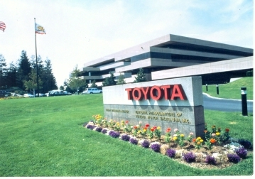
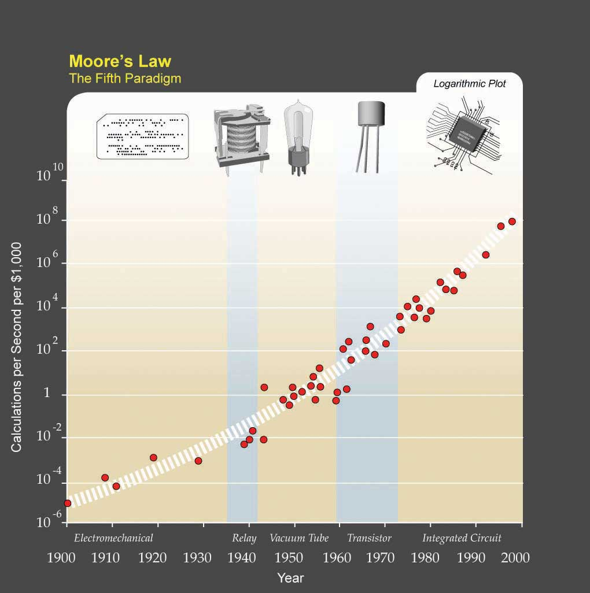
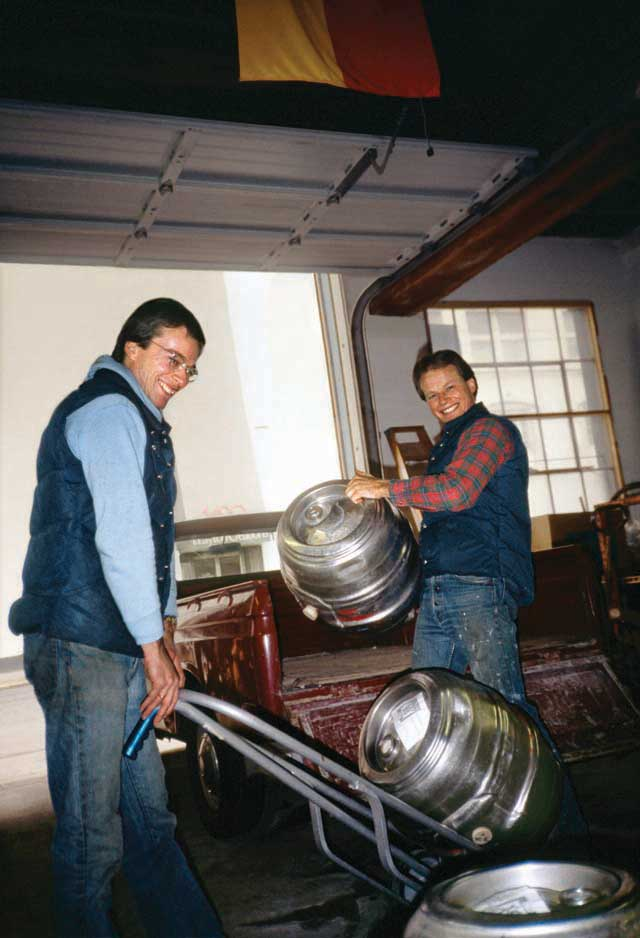

After reading this chapter, you should be able to do the following:
As much as individual and team level factors influence work attitudes and behaviors, the organization’s structure can be an even more powerful influence over employee actions. Organizational structureHow individual and teamwork within an organization is coordinated. refers to how the work of individuals and teams within an organization is coordinated. In order to achieve organizational goals and objectives, individual work needs to be coordinated and managed. Structure is a valuable tool in achieving coordination, as it specifies reporting relationships (who reports to whom), delineates formal communication channels, and describes how separate actions of individuals are linked together.
Figure 14.1
Source: Photograph courtesy of Toyota Motor Sales, USA, Inc.
Toyota Motor Corporation (TYO: 7203) has often been referred to as the gold standard of the automotive industry. In the first quarter of 2007, Toyota (NYSE: TM) overtook General Motors Corporation in sales for the first time as the top automotive manufacturer in the world. Toyota reached success in part because of its exceptional reputation for quality and customer care. Despite the global recession and the tough economic times that American auto companies such as General Motors and Chrysler faced in 2009, Toyota enjoyed profits of $16.7 billion and sales growth of 6% that year. However, late 2009 and early 2010 witnessed Toyota’s recall of 8 million vehicles due to unintended acceleration. How could this happen to a company known for quality and structured to solve problems as soon as they arise? To examine this further, one has to understand about the Toyota Production System (TPS).
TPS is built on the principles of “just-in-time” production. In other words, raw materials and supplies are delivered to the assembly line exactly at the time they are to be used. This system has little room for slack resources, emphasizes the importance of efficiency on the part of employees, and minimizes wasted resources. TPS gives power to the employees on the front lines. Assembly line workers are empowered to pull a cord and stop the manufacturing line when they see a problem.
However, during the 1990s, Toyota began to experience rapid growth and expansion. With this success, the organization became more defensive and protective of information. Expansion strained resources across the organization and slowed response time. Toyota’s CEO, Akio Toyoda, the grandson of its founder, has conceded, “Quite frankly, I fear the pace at which we have grown may have been too quick.”
Vehicle recalls are not new to Toyota; after defects were found in the company’s Lexus model in 1989, Toyota created teams to solve the issues quickly, and in some cases the company went to customers’ homes to collect the cars. The question on many people’s minds is, how could a company whose success was built on its reputation for quality have had such failures? What is all the more puzzling is that brake problems in vehicles became apparent in 2009, but only after being confronted by United States transportation secretary Ray LaHood did Toyota begin issuing recalls in the United States. And during the early months of the crisis, Toyota’s top leaders were all but missing from public sight.
The organizational structure of Toyota may give us some insight into the handling of this crisis and ideas for the most effective way for Toyota to move forward. A conflict such as this has the ability to paralyze productivity but if dealt with constructively and effectively, can present opportunities for learning and improvement. Companies such as Toyota that have a rigid corporate culture and a hierarchy of seniority are at risk of reacting to external threats slowly. It is not uncommon that individuals feel reluctant to pass bad news up the chain within a family company such as Toyota. Toyota’s board of directors is composed of 29 Japanese men, all of whom are Toyota insiders. As a result of its centralized power structure, authority is not generally delegated within the company; all U.S. executives are assigned a Japanese boss to mentor them, and no Toyota executive in the United States is authorized to issue a recall. Most information flow is one-way, back to Japan where decisions are made.
Will Toyota turn its recall into an opportunity for increased participation for its international manufacturers? Will decentralization and increased transparency occur? Only time will tell.
Case written by [citation redacted per publisher request]. Based on information from Accelerating into trouble. (2010, February 11). Economist. Retrieved March 8, 2010, from http://www.economist.com/opinion/displaystory.cfm?story_id=15498249; Dickson, D. (2010, February 10). Toyota’s bumps began with race for growth. Washington Times, p. 1; Maynard, M., Tabuchi, H., Bradsher, K., & Parris, M. (2010, February 7). Toyota has a pattern of slow response on safety issues. New York Times, p. 1; Simon, B. (2010, February 24). LaHood voices concerns over Toyota culture. Financial Times. Retrieved March 10, 2010, from http://www.ft.com/cms/s/0/11708d7c-20d7-11df-b920-00144feab49a.html; Werhane, P., & Moriarty, B. (2009). Moral imagination and management decision making. Business Roundtable Institute for Corporate Ethics. Retrieved April 30, 2010, from http://www.corporate-ethics.org/pdf/moral_imagination.pdf; Atlman, A. (2010, February 24). Congress puts Toyota (and Toyoda) in the hot seat. Time. Retrieved March 11, 2010, from http://www.time.com/time/nation/article/0,8599,1967654,00.html.
What exactly do we mean by organizational structure? In other words, which elements of a company’s structure make a difference in how we behave and how work is coordinated? We will review four aspects of structure that have been frequently studied in the literature. We view these four elements as the building blocks, or elements, making up a company’s structure. Then we will examine how these building blocks come together to form two different configurations of structures.
CentralizationThe degree to which decision making authority is concentrated at higher levels in an organization. is the degree to which decision making authority is concentrated at higher levels in an organization. In centralized companies, many important decisions are made at higher levels of the hierarchy, whereas in decentralized companies, decisions are made and problems are solved at lower levels by employees who are closer to the problem in question.
As an employee, where would you feel more comfortable and productive? If your answer is “decentralized,” you are not alone. Decentralized companies give more authority to lower level employees, resulting in a sense of empowerment. Decisions are often faster, and employees believe that decentralized companies provide greater levels of procedural fairness to employees. Job candidates are more likely to be attracted to decentralized organizations. Because centralized organizations assign decision making responsibility to higher level managers, there are greater demands on the mental and physical capabilities of CEOs and other high-level managers. Despite many perceived disadvantages, centralization may lead to more efficient operations, particularly if the company is operating in a stable environment.Ambrose, M. L., & Cropanzano, R. S. (2000). The effect of organizational structure on perceptions of procedural fairness. Journal of Applied Psychology, 85, 294–304; Miller, D., Droge, C., & Toulouse, J. (1988). Strategic process and content as mediators between organizational context and structure. Academy of Management Journal, 31, 544–569; Oldham, G. R., & Hackman, R. J. (1981). Relationships between organizational structure and employee reactions: Comparing alternative frameworks. Administrative Science Quarterly, 26, 66–83; Pierce, J. L., & Delbecq, A. L. (1977). Organization Structure, individual attitudes and innovation. Academy of Management Review, 2, 27–37; Schminke, M., Ambrose, M. L., & Cropanzano, R. S. (2000). The effect of organizational structure on perceptions of procedural fairness. Journal of Applied Psychology, 85, 294–304; Turban, D. B., & Keon, T. L. (1993). Organizational attractiveness: An interactionist perspective. Journal of Applied Psychology, 78, 184–193; Wally, S., & Baum, J. R. (1994). Personal and structural determinants of the pace of strategic decision making. Academy of Management Journal, 37, 932–956.
Figure 14.2
Changing their decision-making approach to a more decentralized style has helped Caterpillar Inc. compete at the global level.
Many companies find that the centralization of operations leads to inefficiencies in decision making. For example, in the 1980s, Caterpillar Inc. suffered the consequences of centralized decision making. At the time, all pricing decisions were made in the corporate headquarters in Peoria, Illinois. This meant that when a sales representative working in Africa wanted to give a discount on a product, they needed to check with headquarters. Headquarters did not always have accurate or timely information about the subsidiary markets to make an effective decision. The dramatic reorganization of the company sought to avoid problems such as these.Nelson, G. L., & Pasternack, B. A. (2005). Results: Keep what’s good, fix what’s wrong, and unlock great performance. New York: Crown Business. At the other end of the spectrum, organizations can suffer from extreme decentralization. For example, some analysts believe that the Federal Bureau of Investigation (FBI) experiences some problems because all its structure and systems are based on the assumption that crime needs to be caught after it happens. Over time, this assumption led to a situation in which, instead of following an overarching strategy, each unit is completely decentralized, and field agents determine how investigations should be pursued. It has been argued that due to the change in the nature of crimes, the FBI’s need to gather accurate intelligence before a crime is committed requires more centralized decision making and strategy development.Brazil, J. J. (2007, April). Mission: Impossible? Fast Company, 114, 92–109.
Hitting the right balance between decentralization and centralization is a challenge for many organizations. At the Home Depot Inc., the retail giant with over 2,000 stores across the United States, Canada, Mexico, and China, one of the major changes their former CEO Robert Nardelli did was to centralize most of its operations. Before the transition, Home Depot store managers made a number of decisions autonomously and each store had an entrepreneurial culture. Nardelli’s changes initially saved the company a lot of money. For example, for a company of that size, centralizing purchasing operations led to big cost savings, because the company could negotiate significant discounts from suppliers. At the same time, many analysts think that the centralization went too far, leading to the loss of the service-oriented culture at the stores.Charan, R. (2006, April). Home Depot’s blueprint for culture change. Harvard Business Review, 84(4), 60–70; Marquez, J. (2007, January 15). Big bucks at door for Depot HR leader. Workforce Management, 86(1).
FormalizationThe extent to which policies, procedures, job descriptions, and rules are written and explicitly articulated. is the extent to which policies, procedures, job descriptions, and rules are written and explicitly articulated. In other words, formalized structures are those in which there are many written rules and regulations. These structures control employee behavior using written rules, and employees have little autonomy to make decisions on a case-by-case basis. Formalization makes employee behavior more predictable. Whenever a problem at work arises, employees know to turn to a handbook or a procedure guideline. Therefore, employees respond to problems in a similar way across the organization, which leads to consistency of behavior.
While formalization reduces ambiguity and provides direction to employees, it is not without disadvantages. A high degree of formalization may actually lead to reduced innovativeness, because employees are used to behaving in a certain manner. In fact, strategic decision making in such organizations often occurs only when there is a crisis. A formalized structure is associated with reduced motivation and job satisfaction as well as a slower pace of decision making.Fredrickson, J. W. (1986). The strategic decision process and organizational structure. Academy of Management Review, 11, 280–297; Oldham, G. R., & Hackman, R. J. (1981). Relationships between organizational structure and employee reactions: Comparing alternative frameworks. Administrative Science Quarterly, 26, 66–83; Pierce, J. L., & Delbecq, A. L. (1977). Organization structure, individual attitudes and innovation. Academy of Management Review, 2, 27–37; Wally, S., & Baum, R. J. (1994). Strategic decision speed and firm performance. Strategic Management Journal, 24, 1107–1129. The service industry is particularly susceptible to problems associated with high levels of formalization. Sometimes employees who are listening to a customer’s problems may need to take action, but the answer may not be specified in any procedural guidelines or rulebook. For example, while a handful of airlines such as Southwest Airlines Company do a good job of empowering their employees to handle complaints, in many airlines lower level employees have limited power to resolve a customer problem and are constrained by stringent rules that outline a limited number of acceptable responses.
Another important element of a company’s structure is the number of levels it has in the hierarchy. Keeping the size of the organization constant, tall structuresAn organization where there are several layers of management between frontline employees and the top level. have several layers of management between frontline employees and the top level, while flat structuresAn organization with few layers, often with large numbers of employees reporting to a single manager. consist of few layers. A closely related concept is span of controlThe number of employees reporting to a single manager., or the number of employees reporting to a single manager. In tall structures, span of control tends to be smaller, resulting in greater opportunities for managers to supervise and monitor employee activities. In contrast, flat structures involve a wider span of control. In such a structure, managers will be relatively unable to provide close supervision, leading to greater levels of freedom of action for each employee. Research indicates that flat organizations provide greater need satisfaction for employees, and greater levels of self-actualization.Ghiselli, E. E., & Johnson, D. A. (1970). Need satisfaction, managerial success, and organizational structure. Personnel Psychology, 23, 569–576; Porter, L. W., & Siegel, J. (2006). Relationships of tall and flat organization structures to the satisfactions of foreign managers. Personnel Psychology, 18, 379–392. Companies such as the IKEA Group, the Swedish furniture manufacturer and retailer, are successfully using flat structures to build an employee mentality of job involvement and ownership. At the same time, there may be some challenges associated with flat structures. In flat structures, employees will not have many opportunities to receive supervision and guidance from the manager, making it necessary for employees to be self-reliant. In fact, research shows that when managers supervise a large number of employees, which is more likely to happen in flat structures, employees experience greater levels of role ambiguity.Chonko, L. B. (1982). The relationship of span of control to sales representatives’ experienced role conflict and role ambiguity. Academy of Management Journal, 25, 452–456. This may be a disadvantage for employees who need closer guidance from their managers. Moreover, in a flat structure, advancement opportunities will be more limited, because there are fewer management layers. Finally, while employees report that flat structures are better at satisfying their higher order needs such as self-actualization, they also report that tall structures are better at satisfying security needs of employees.Porter, L. W., & Lawler, E. E. (1964). The effects of tall versus flat organization structures on managerial job satisfaction. Personnel Psychology, 17, 135–148. Because tall structures are typical of large and well-established companies, it is possible that when working in such organizations, employees feel a greater sense of job security.
Figure 14.3
Companies such as IKEA, the Swedish furniture manufacturer and retailer, are successfully using flat structures within stores to build an employee attitude of job involvement and ownership.
Organizational structures differ in terms of departmentalization. Organizations using functional structuresGrouping of jobs based on similarity in functions. group jobs based on similarity in functions. Such structures may have departments such as marketing, manufacturing, finance, accounting, human resources, and information technology. In these structures, each person serves a specialized role and handles large volumes of transactions. For example, a marketing employee working in a functional structure may serve as an event planner, planning promotional events for all the products of the company. In organizations using divisional structuresGrouping of jobs based on the products, services, customers, or geographic locations the company is serving., departments represent the unique products, services, customers, or geographic locations the company is serving. In other words, each unique product or service the company is producing will have its own department. Within each department, functions such as marketing, manufacturing, and other roles are replicated. In these structures, employees act like generalists as opposed to specialists. Instead of performing specialized tasks, employees will be in charge of performing many different tasks in the service of the product. For example, a marketing employee working in this structure may be in charge of planning promotions, coordinating relations with advertising agencies, and planning and conducting marketing research.
In reality, many structures are a hybrid of functional and divisional forms. For example, if the company has multiple product lines, departmentalizing by product may increase innovativeness and reduce response times. Each of these departments may have dedicated marketing, manufacturing, and customer service employees serving the specific product, yet the company may also find that centralizing some operations and retaining the functional structure makes sense and is more cost effective for roles such as human resources management and information technology. The same organization may also create geographic departments, if it is serving different countries.
Figure 14.4 An Example of a Pharmaceutical Company With Functional Departments

Figure 14.5 An Example of a Pharmaceutical Company With Product Departments

Functional structures tend to be effective when an organization does not have a large number of products and services requiring special attention. When a company has a diverse product line, each product will have unique demands, deeming traditional structures less useful for promptly addressing customer demands and anticipating market changes. Functional structures are also more effective in stable environments that are slower to change. In contrast, organizations using product departments are more agile and can perform better in turbulent environments. The type of employee who will succeed under each structure is also different. Research shows that when employees work in product departments in turbulent environments, because activities are diverse and complex, their performance depends on their general mental abilities.Hollenbeck, J. R., Moon, H., Ellis, A. P. J., West, B. J., & Ilgen, D. R (2002). Structural contingency theory and individual differences: Examination of external and internal person-team fit. Journal of Applied Psychology, 87, 599–606.
The different elements making up organizational structures in the form of formalization, centralization, number of levels in the hierarchy, and departmentalization often coexist. As a result, we can talk about two configurations of organizational structures, depending on how these elements are arranged.
Mechanistic structuresStructures that resemble a bureaucracy and are highly formalized and centralized. are similar to bureaucracies, as they are highly formalized and centralized. Communication tends to follow formal channels, and employees are given specific job descriptions delineating their roles and responsibilities. Mechanistic organizations are often rigid and resist change, making them unsuitable for being innovative and taking quick action. These forms have the downside of inhibiting entrepreneurial action and discouraging the use of individual initiative on the part of employees. Not only do mechanistic structures have disadvantages for innovativeness, they also limit individual autonomy and self-determination, which will likely lead to lower levels of intrinsic motivation on the job.Burns, T., & Stalker, M. G. (1961). The management of innovation. London: Tavistock; Covin, J. G., & Slevin, D. P. (1988). The influence of organizational structure. Journal of Management Studies, 25, 217–234; Schollhammer, H. (1982). Internal corporate entrepreneurship. Englewood, NJ: Prentice Hall; Sherman, J. D., & Smith, H. L. (1984). The influence of organizational structure on intrinsic versus extrinsic motivation. Academy of Management Journal, 27, 877–885; Slevin, D. P., & Covin, J. G. (1990). Juggling entrepreneurial style and organizational structure—how to get your act together. Sloan Management Review, 31(2), 43–53. Despite these downsides, mechanistic structures have advantages when the environment is more stable. The main advantage of a mechanistic structure is its efficiency. Therefore, in organizations that are trying to maximize efficiency and minimize costs, mechanistic structures provide advantages. For example, McDonald’s Corporation has a famously bureaucratic structure in which employee jobs are highly formalized, with clear lines of communication and very specific job descriptions. This structure is an advantage for them, because it allows McDonald’s to produce a uniform product around the world at minimum cost. Moreover, mechanistic structures tend to be advantageous for new ventures. New businesses often suffer from a lack of structure, role ambiguity, and uncertainty. The presence of a mechanistic structure has been shown to be related to firm performance in new ventures.Sine, W. D., Mitsuhashi, H., & Kirsch, D. A. (2006). Revisiting Burns and Stalker: Formal structure and new venture performance in emerging economic sectors. Academy of Management Journal, 49, 121–132.
Organic structuresFlexible and decentralized structures with low levels of formalization where communication lines are more fluid and flexible. are flexible, decentralized structures with low levels of formalization. Communication lines are more fluid and flexible. Employee job descriptions are broader, and employees are asked to perform duties based on the specific needs of the organization at the time as well as their own expertise levels. Organic structures tend to be related to higher levels of job satisfaction on the part of employees. These structures are conducive to entrepreneurial behavior and innovativeness.Burns, T., & Stalker, M. G. (1961). The management of innovation. London: Tavistock; Covin, J. G., & Slevin, D. P. (1988). The influence of organizational structure. Journal of Management Studies, 25, 217–234. An example of a company that has an organic structure is 3M. The company is strongly committed to decentralization. At 3M, there are close to 100 profit centers, with each division feeling like a small company. Each division manager acts autonomously and is accountable for his or her actions. As operations within each division get too big and a product created by a division becomes profitable, the operation is spun off to create a separate business unit. This is done to protect the agility of the company and the small-company atmosphere.Adair, J. (2007). Leadership for innovation: How to organize team creativity and harvest ideas. London: Kogan Page.
Matrix organizationsA cross between a traditional functional structure with a product structure. Specifically, employees reporting to department managers are also pooled together to form project or product teams. cross a traditional functional structure with a product structure. Specifically, employees reporting to department managers are also pooled together to form project or product teams. As a result, each person reports to a department manager as well as a project or product manager. In this structure, product managers have control and say over product-related matters. Matrix structures are created in response to uncertainty and dynamism of the environment and the need to give particular attention to specific products or projects. Instead of completely switching from a product-based structure, a company may utilize a matrix structure to balance the benefits of product-based and traditional functional structures.
Using the matrix structure as opposed to product departments may increase communication and cooperation among departments, because project managers will need to coordinate their actions with department managers. In fact, research shows that matrix structure increases the frequency of informal and formal communication within the organization.Joyce, W. F. (1986). Matrix organization: A social experiment. Academy of Management Journal, 29, 536–561. Matrix structures also have the benefit of providing quick responses to technical problems and customer demands. The existence of a project manager keeps the focus on the product or service that is being provided.
Despite these potential benefits, matrix structures are not without costs. In a matrix, each employee reports to at least two or more managers. In other words, the matrix organization violates the unity of commandA situation where each person reports to a single manager. Traditional organizations are based on the principle of unity of command, while matrix organizations do not follow this principle. principle that is often prevalent in traditional organizations. In organizations with unity of command, each person reports to a single manager. As a result, communication flows through predictable lines and coordination is easier. Because matrix organizations do not follow unity of command, this is a situation ripe with conflict. Because multiple managers are in charge of guiding the behaviors of each employee, there may be power struggles or turf wars among managers. The managers are more interdependent compared to a traditional or product-based structure, and they will need to spend more effort coordinating their work. From the employee’s perspective, there is potential for interpersonal conflict with team members as well as with leaders. The presence of multiple leaders may create role conflict. The necessity to work with a team consisting of employees with different functional backgrounds increases the potential for task conflict at work.Ford, R. C., & Randolph, W. A. (1992). Cross-functional structures: A review and integration of matrix organization and project management. Journal of Management, 18, 267–294. Solving these problems will require a great deal of patience and proactivity on the part of the employee.
Figure 14.6

An example of a matrix structure at a software development company. Business analysts, developers, and testers each report to a functional department manager and to a project manager simultaneously.
The matrix structure is used in many information technology companies engaged in software development. See the example of a matrix structure for an IT company presented in the following figure. Nike Inc. is another company that utilizes the matrix organization successfully. New product introduction is a task shared by regional managers and product managers. While product managers are in charge of deciding how to launch a product, regional managers are allowed to make modifications based on the region.Anand, N., & Daft, R. L. (2007). What is the right organization design? Organizational Dynamics, 36(4), 329–344.
Due to the widespread use of matrix structures and similar organizational forms, you may find that you are reporting to multiple bosses as opposed to just one. Here is what you can do to make this situation work more smoothly for everyone involved:
Sources: Adapted from information in Frings, C. S. (2002, August). Management Q & A: Answering your questions on multiple bosses and not following standard operating procedure. Medical Laboratory Observer, 34(8), 24–25; Hymowitz, C. (2003, August 12). Managers suddenly have to answer to a crowd of bosses. Wall Street Journal, B1; McCune, J. (2006, August–September). Multiple bosses multiple directions. Office Pro, 66(6), 10–14.
Boundaryless organizationA term coined by Jack Welch of GE and refers to an organization that eliminates traditional barriers between departments as well as barriers between the organization and the external environment. is a term coined by Jack Welch of General Electric Company and refers to an organization that eliminates traditional barriers between departments, as well as barriers between the organization and the external environment. Many different types of boundaryless organizations exist. One form is the modular organizationAn organization where all the nonessential functions are outsourced. where all the nonessential functions are outsourced. The idea behind this format is to retain only the value-generating and strategic functions in-house, while the rest of the operations are outsourced to many suppliers. An example of a company doing this is Toyota. By managing relationships with hundreds of suppliers, Toyota achieves efficiency and quality in its operations. Strategic alliancesA form of boundaryless design where two or more companies find an area of collaboration and combine their efforts to create a partnership that is beneficial for both parties. constitute another form of boundaryless design. Here, similar to a joint venture, two or more companies find an area of collaboration and combine their efforts to create a partnership that is beneficial for both parties. In this form, the traditional boundaries between two competitors may be broken. As an example, Starbucks Corporation formed a highly successful partnership with PepsiCo Inc. to market its Frappuchino cold drinks. Starbucks has immediate brand name recognition in this cold coffee drink, but its desire to capture shelf space in supermarkets required marketing savvy and experience that Starbucks did not possess at the time. By partnering with PepsiCo, Starbucks gained an important head start in the marketing and distribution of this product. Finally, boundaryless organizations may involve eliminating the barriers separating employees, such as traditional management layers or walls between different departments. Structures such as self-managing teams create an environment where employees coordinate their efforts and change their own roles to suit the demands of the situation, as opposed to insisting that something is “not my job.”Dess, G. G., Rasheed, A. M. A., McLaughlin, K. J., & Priem, R. L. (1995). The new corporate architecture. Academy of Management Executive, 9(3), 7–18; Rosenbloom, B. (2003). Multi-channel marketing and the retail value chain. Thexis, 3, 23–26.
A learning organizationAn organization where acquiring knowledge and changing behavior as a result of the newly acquired knowledge is part of an organization’s design. is one where acquiring knowledge and changing behavior as a result of the newly gained knowledge are part of an organization’s design. In these structures, experimenting, learning new things, and reflecting on new knowledge are the norms. At the same time, there are many procedures and systems in place that facilitate learning at the organizational level.
In learning organizations, experimentation and testing potentially better operational methods are encouraged. This is true not only in response to environmental threats, but also as a way of identifying future opportunities. 3M is one company that institutionalized experimenting with new ideas in the form of allowing each engineer to spend one day a week working on a personal project. At IBM Corporation, this is achieved by taking highly successful business managers and putting them in charge of emerging business opportunities (EBOs). IBM is a company that has no difficulty coming up with new ideas, as evidenced by the number of patents it holds. Yet commercializing these ideas has been a problem in the past, owing to an emphasis on short-term results. To change this situation, the company began experimenting with the idea of EBOs. By setting up a structure in which failure is tolerated and risk taking is encouraged, the company took a big step toward becoming a learning organization.Deutschman, A. (2005, March). Building a better skunk works. Fast Company, 92, 68–73.
Learning organizations are also good at learning from experience, be it their own or a competitors’. In order to learn from past mistakes, companies conduct a thorough analysis of them. Some companies choose to conduct formal retrospective meetings to analyze the challenges encountered and areas for improvement. In order to learn from others, these companies vigorously study competitors, market leaders in different industries, clients, and customers. By benchmarking against industry best practices, they constantly look for ways of improving their own operations. Learning organizations are also good at studying customer habits to generate ideas. For example, Xerox Corporation uses anthropologists to understand and gain insights into how customers are actually using their office products.Garvin, D. A. (1993, July–August). Building a learning organization. Harvard Business Review, 71(4), 78–91. By using these techniques, learning organizations facilitate innovativeness and make it easier to achieve organizational change.
The degree to which a company is centralized and formalized, the number of levels in the company hierarchy, and the type of departmentalization the company uses are key elements of a company’s structure. These elements of structure affect the degree to which the company is effective and innovative as well as employee attitudes and behaviors at work. These elements come together to create mechanistic and organic structures. Rigid and bureaucratic, mechanistic structures help companies achieve efficiency, while organic structures, which are decentralized and flexible, aid companies in achieving innovativeness. The changing environment of organizations creates the need for newer forms of organizing. Matrix structures are a cross between functional and product-based divisional structures. They facilitate information flow and reduce response time to customers but have challenges, because each employee reports to multiple managers. Boundaryless organizations blur the boundaries between departments or the boundaries between the focal organization and others in the environment. These organizations may take the form of a modular organization, strategic alliance, or self-managing teams. Learning organizations institutionalize experimentation and benchmarking.
Organizational changeThe movement of an organization from one state of affairs to another. is the movement of an organization from one state of affairs to another. Organizational change can take many forms. It may involve a change in a company’s structure, strategy, policies, procedures, technology, or culture. The change may be planned years in advance or may be forced upon an organization because of a shift in the environment. Organizational change can be radical and alter the way an organization operates, or it may be incremental and slowly change the way things are done. In any case, regardless of the type, change involves letting go of the old ways in which work is done and adjusting to the new ways. Therefore, fundamentally, it is a process that involves effective people management.
Organizational change is often a response to changes in the environment. For example, both the United States Department of Labor and Organization for Economic Co-operation and Development (OECD) estimate that the age of the workforce is on the rise.Lerman, R. I., & Schmidt, S. R. (2006). Trends and challenges for work in the 21st century. Retrieved September 10, 2008, from U.S. Department of Labor Web site: http://www.dol.gov/oasam/programs/history/herman/reports/futurework/conference/trends/trendsI.htm. What does this mean for companies? Organizations may realize that as the workforce gets older the types of benefits they prefer may change. Work arrangements such as flexible work hours and job sharing may become more popular as employees remain in the workforce even after retirement. As the workforce rapidly ages, it also becomes possible that employees who are unhappy with their current work situation will choose to retire, resulting in a sudden loss of valuable knowledge and expertise on the part of organizations. Therefore, organizations will have to devise strategies to retain these employees and plan for their retirement. Finally, a critical issue is finding ways of dealing with age-related stereotypes, which act as barriers in the retention of these employees.
Sometimes change is motivated by rapid developments in technology. Moore’s law (a prediction by Gordon Moore, cofounder of Intel Corporation) dictates that the overall complexity of computer circuits will double every 18 months with no increase in cost.Moore’s Law. Retrieved September 5, 2008, from Answers.com Web site: http://www.answers.com/topic/moore-s-law. Such change is motivating corporations to rapidly change their technology. Sometimes technology produces such profound developments that companies struggle to adapt. A recent example is from the music industry. When CDs were first introduced in the 1980s, they were substantially more appealing than the traditional LPs. Record companies were easily able to double the prices, even though producing CDs cost a fraction of what it cost to produce LPs. For decades, record producing companies benefited from this status quo. Yet when peer-to-peer file sharing through software such as Napster and Kazaa threatened the core of their business, companies in the music industry found themselves completely unprepared for such disruptive technological changes. Their first response was to sue the users of file-sharing software, sometimes even underage kids. They also kept looking for a technology that would make it impossible to copy a CD or DVD, which has yet to emerge. Until Apple Inc.’s iTunes came up with a new way to sell music online, it was doubtful that consumers would ever be willing to pay for music that was otherwise available for free (albeit illegally so). Only time will tell if the industry will be able to adapt itself to the changes forced upon it.Lasica, J. D. (2005). Darknet: Hollywood’s war against the digital generation. Hoboken, NJ: Wiley.
Figure 14.8
Ray Kurzweil expanded Moore’s law from integrated circuits to earlier transistors, vacuum tubes, relays, and electromechanical computers to show that his trend holds there as well.
Globalization is another threat and opportunity for organizations, depending on their ability to adapt to it. Organizations are finding that it is often cheaper to produce goods and deliver services in some countries compared to others. This led many companies to utilize manufacturing facilities overseas, with China as a popular destination. For a while, knowledge work was thought to be safe from outsourcing, but now we are also seeing many service operations moved to places with cheaper wages. For example, many companies have outsourced software development to India, with Indian companies such as Wipro Ltd. and Infosys Technologies Ltd. emerging as global giants. Given these changes, understanding how to manage a global workforce is a necessity. Many companies realize that outsourcing forces them to operate in an institutional environment that is radically different from what they are used to at home. Dealing with employee stress resulting from jobs being moved overseas, retraining the workforce, and learning to compete with a global workforce on a global scale are changes companies are trying to come to grips with.
Changes in the market conditions may also create changes as companies struggle to adjust. For example, as of this writing, the airline industry in the United States is undergoing serious changes. Demand for air travel was affected after the September 11 terrorist attacks. Also, the widespread use of the Internet to book plane travels made it possible to compare airline prices much more efficiently and easily, encouraging airlines to compete primarily based on cost. This strategy seems to have backfired when coupled with the dramatic increases in the cost of fuel. As a result, airlines are cutting back on amenities that were taken for granted for decades, such as the price of a ticket including meals, beverages, and checking luggage. Some airlines, such as Delta Air Lines Inc. and Northwest Airlines Inc., have merged to deal with this climate, and talks involving other mergers in this industry continue.
How does a change in the environment create change within an organization? Note that environmental change does not automatically change how business is done. Whether or not the organization changes in response to environmental challenges and threats depends on the decision makers’ reactions to what is happening in the environment.
Figure 14.9
In 1984, brothers Kurt (on the left) and Rob Widmer founded Widmer Brothers, which is now the 11th largest brewery in the United States.
Source: Permission granted by Widmer Brothers Brewing Co.
It is natural for once small start-up companies to grow if they are successful. An example of this growth is the evolution of the Widmer Brothers Brewing Company, which started as two brothers brewing beer in their garage to become the 11th largest brewery in the United States. This growth happened over time as the popularity of their key product—Hefeweizen—grew in popularity; the company had to expand to meet demand, growing from the 2 founders to 400 employees in 2008 after Widmer Brothers merged with Redhook Ale Brewery to become Craft Brewers Alliance Inc. The newly formed company has five main departments, including Operations, Sales, Marketing, Finance, and Retail, who report to the CEO. Anheuser-Busch Companies Inc. continues to have a minority stake in both beer companies. So, while 50% of all new small businesses fail in their first year,Get ready. United States Small Business Association. Retrieved November 21, 2008, from http://www.sba.gov/smallbusinessplanner/plan/getready/SERV_SBPLANNER_ ISENTFORU.html. those that succeed often evolve into large, complex organizations over time.
Change is more likely to happen if the company is performing poorly and if there is a perceived threat from the environment. In fact, poorly performing companies often find it easier to change compared to successful companies. Why? High performance actually leads to overconfidence and inertia. As a result, successful companies often keep doing what made them a success in the first place. When it comes to the relationship between company performance and organizational change, the saying “nothing fails like success” may be fitting. For example, Polaroid Corporation was the number one producer of instant films and cameras in 1994. The company filed for bankruptcy in less than a decade, unable to adapt to the rapid advances in the 1-hour photo development and digital photography technologies. Successful companies that manage to change have special practices in place to keep the organization open to changes. As a case in point, Nokia finds that it is important to periodically change the perspective of key decision makers. For this purpose, they rotate heads of businesses to different posts to give them a fresh perspective. In addition to the success of a business, change in a company’s upper level management is a motivator for change at the organization level. Research shows that long-tenured CEOs are unlikely to change their formula for success. Instead, new CEOs and new top management teams create change in a company’s culture and structure.Barnett, W. P., & Carroll, G. R. (1995). Modeling internal organizational change. Annual Review of Sociology, 21, 217–236; Boeker, W. (1997). Strategic change: The influence of managerial characteristics and organizational growth. Academy of Management Journal, 40, 152–170; Deutschman, A. (2005, March). Building a better skunk works. Fast Company, 92, 68–73.
Changing an organization is often essential for a company to remain competitive. Failure to change may influence the ability of a company to survive. Yet, employees do not always welcome changes in methods. According to a 2007 survey conducted by the Society for Human Resource Management (SHRM), resistance to change is one of the top two reasons why change efforts fail. In fact, reactions to organizational change may range from resistance to compliance to being an enthusiastic supporter of the change, with the latter being the exception rather than the norm.Change management: The HR strategic imperative as a business partner. (2007, December). HR Magazine, 52(12); Huy, Q. N. (1999). Emotional capability, emotional intelligence, and radical change. Academy of Management Review, 24, 325–345.
Figure 14.10

Reactions to change may take many forms.
Active resistanceThe most negative reaction to a proposed change attempt. is the most negative reaction to a proposed change attempt. Those who engage in active resistance may sabotage the change effort and be outspoken objectors to the new procedures. In contrast, passive resistanceBeing disturbed by changes without necessarily voicing these opinions. involves being disturbed by changes without necessarily voicing these opinions. Instead, passive resisters may quietly dislike the change, feel stressed and unhappy, and even look for an alternative job without necessarily bringing their point to the attention of decision makers. ComplianceGoing along with proposed changes with little enthusiasm., on the other hand, involves going along with proposed changes with little enthusiasm. Finally, those who show enthusiastic supportDefenders of the new way and actually encourage others around them to give support to the change effort as well. are defenders of the new way and actually encourage others around them to give support to the change effort as well.
Any change attempt will have to overcome the resistance on the part of people to be successful. Otherwise, the result will be loss of time and energy as well as an inability on the part of the organization to adapt to the changes in the environment and make its operations more efficient. Resistance to change also has negative consequences for the people in question. Research shows that when people negatively react to organizational change, they experience negative emotions, use sick time more often, and are more likely to voluntarily leave the company.Fugate, M., Kinicki, A. J., & Prussia, G. E. (2008). Employee coping with organizational change: An examination of alternative theoretical perspectives and models. Personnel Psychology, 61, 1–36.
The following is a dramatic example of how resistance to change may prevent improving the status quo. Have you ever wondered why the letters on keyboards are laid out the way they are? The QWERTY keyboard, named after the first six letters in the top row, was actually engineered to slow us down. The first prototypes of the typewriter keyboard would jam if the keys right next to each other were hit at the same time. Therefore, it was important for manufacturers to slow typers down. They achieved this by putting the most commonly used letters to the left-hand side, and scattering the most frequently used letters all over the keyboard. Later, the issue of letters being stuck was resolved. In fact, an alternative to the QWERTY named the Dvorak keyboard provides a much more efficient design and allows individuals to double traditional typing speeds. Yet the shift never occurred. The reasons? Large numbers of people resisted the change. Teachers and typists resisted, because they would lose their specialized knowledge. Manufacturers resisted because of costs inherent in making the switch and the initial inefficiencies in the learning curve.Diamond, J. (2005). Guns, germs and steel: The fates of human societies. New York: W. W. Norton. In short, the best idea does not necessarily win, and changing people requires understanding why they resist.
Figure 14.11

The Dvorak keyboard is a more efficient design compared to the QWERTY keyboard. Due to resistance from typists, manufacturers, and teachers, it never gained widespread adoption.
People often resist change for the simple reason that change disrupts our habits. Do you think about how you are driving when you drive? Most of the time probably not, because driving generally becomes an automated activity after a while. You may sometimes even realize that you have reached your destination without noticing the roads you used or having consciously thought about any of your body movements. Now imagine you drive for a living, and even though you are used to driving an automatic car, you are now forced to use a stick shift. You can most likely figure out how to drive a stick, but it will take time, and until you figure it out, you cannot drive on auto pilot. You will have to reconfigure your body movements and practice shifting until you become good at it. You may find that for this simple reason, people sometimes are surprisingly outspoken when confronted with simple changes such as updating to a newer version of a particular software or a change in their voice mail system.
Some people are more resistant to change than others. Research shows that people who have a positive self-concept are better at coping with change, probably because those who have high self-esteem may feel that whatever the changes are, they are likely to adjust to it well and be successful in the new system. People with a more positive self-concept and those who are more optimistic may also view change as an opportunity to shine as opposed to a threat that is overwhelming. Finally, risk tolerance is another predictor of how resistant someone will be to stress. For people who are risk avoidant, the possibility of a change in technology or structure may be more threatening.Judge, T. A., Thoresen, C. J., Pucik, V., & Welbourne, T. M. (1999). Managerial coping with organizational change. Journal of Applied Psychology, 84, 107–122; Wanberg, C. R., & Banas, J. T. (2000). Predictors and outcomes of openness to changes in a reorganizing workplace. Journal of Applied Psychology, 85, 132–142.
Change inevitably brings feelings of uncertainty. You have just heard that your company is merging with another. What would be your reaction? Such change is often turbulent, and it is often unclear what is going to happen to each individual. Some positions may be eliminated. Some people may see a change in their job duties. Things can get better—or they may get worse. The feeling that the future is unclear is enough to create stress for people, because it leads to a sense of lost control.Ashford, S. J., Lee, C. L., & Bobko, P. (1989). Content, causes, and consequences of job insecurity: A theory-based measure and substantive test. Academy of Management Journal, 32, 803–829; Fugate, M., Kinicki, A. J., & Prussia, G. E. (2008). Employee coping with organizational change: An examination of alternative theoretical perspectives and models. Personnel Psychology, 61, 1–36.
People also resist change when they feel that their performance may be affected under the new system. People who are experts in their jobs may be less than welcoming of the changes, because they may be unsure whether their success would last under the new system. Studies show that people who feel that they can perform well under the new system are more likely to be committed to the proposed change, while those who have lower confidence in their ability to perform after changes are less committed.Herold D. M., Fedor D. B., & Caldwell, S. (2007). Beyond change management: A multilevel investigation of contextual and personal influences on employees’ commitment to change. Journal of Applied Psychology, 92, 942–951.
It would be too simplistic to argue that people resist all change, regardless of its form. In fact, people tend to be more welcoming of change that is favorable to them on a personal level (such as giving them more power over others, or change that improves quality of life such as bigger and nicer offices). Research also shows that commitment to change is highest when proposed changes affect the work unit with a low impact on how individual jobs are performed.Fedor, D. M., Caldwell, S., & Herold, D. M. (2006). The effects of organizational changes on employee commitment: A multilevel investigation. Personnel Psychology, 59, 1–29.
Any change effort should be considered within the context of all the other changes that are introduced in a company. Does the company have a history of making short-lived changes? If the company structure went from functional to product-based to geographic to matrix within the past 5 years, and the top management is in the process of going back to a functional structure again, a certain level of resistance is to be expected because people are likely to be fatigued as a result of the constant changes. Moreover, the lack of a history of successful changes may cause people to feel skeptical toward the newly planned changes. Therefore, considering the history of changes in the company is important to understanding why people resist. Also, how big is the planned change? If the company is considering a simple switch to a new computer program, such as introducing Microsoft Access for database management, the change may not be as extensive or stressful compared to a switch to an enterprise resource planning (ERP) system such as SAP or PeopleSoft, which require a significant time commitment and can fundamentally affect how business is conducted.Labianca, G., Gray, B., & Brass D. J. (2000). A grounded model of organizational schema change during empowerment. Organization Science, 11, 235–257; Rafferty, A. E., & Griffin. M. A. (2006). Perceptions of organizational change: A stress and coping perspective. Journal of Applied Psychology, 91, 1154–1162.
One other reason why people may resist change is that change may affect their power and influence in the organization. Imagine that your company moved to a more team-based structure, turning supervisors into team leaders. In the old structure, supervisors were in charge of hiring and firing all those reporting to them. Under the new system, this power is given to the team itself. Instead of monitoring the progress the team is making toward goals, the job of a team leader is to provide support and mentoring to the team in general and ensure that the team has access to all resources to be effective. Given the loss in prestige and status in the new structure, some supervisors may resist the proposed changes even if it is better for the organization to operate around teams.
In summary, there are many reasons individuals resist change, which may prevent an organization from making important changes.
Resistance to change may be a positive force in some instances. In fact, resistance to change is a valuable feedback tool that should not be ignored. Why are people resisting the proposed changes? Do they feel that the new system will not work? If so, why not? By listening to people and incorporating their suggestions into the change effort, it is possible to make a more effective change. Some of a company’s most committed employees may be the most vocal opponents of a change effort. They may fear that the organization they feel such a strong attachment to is being threatened by the planned change effort and the change will ultimately hurt the company. In contrast, people who have less loyalty to the organization may comply with the proposed changes simply because they do not care enough about the fate of the company to oppose the changes. As a result, when dealing with those who resist change, it is important to avoid blaming them for a lack of loyalty.Ford, J. D., Ford, L. W., & D’Amelio, A. (2008). Resistance to change: The rest of the story. Academy of Management Review, 33, 362–377.
Organizational change sometimes means reducing the number of people working in the company to make operations more efficient. Sometime in your career, you may find that you go through this painful, sometimes traumatic experience. What do you do to recover in the aftermath of a downsizing?
Sources: Based on information in How to maximize your take when you get laid off. (2008, November). Money, 37(11), 132; Kamberg, M. L. (2000, May–June). Surviving the ups & downs of corporate restructuring. Women in Business, 52(3). Palmer, K. (2008, March 24). Re-energizing your career. U.S. News & World Report, 144(9). Weinstein, B. (2008, September 29). Downsizing 102: When it happens to you. Business Week Online. Retrieved on October 25, 2008, from http://www.businessweek.com/managing/content/sep2008/ca20080926_140228.htm.
Figure 14.13

Lewin’s three-stage process of change emphasizes the importance of preparation or unfreezing before change, and reinforcement of change afterward or refreezing.
How do you plan, organize, and execute change effectively? One of the most useful frameworks in this area is Kurt Lewin’s three-stage model of planned change.Lewin K. (1951). Field theory in social science. New York: Harper & Row. The assumption is that change will encounter resistance. Therefore, executing change without prior preparation is likely to lead to failure. Instead, organizations should start with unfreezingOr making sure that organizational members are ready for and receptive to change, is the first step in Lewin’s suggested change model., or making sure that organizational members are ready for and receptive to change. This is followed by changeOr executing the planned changes, is the second phase of Lewin’s change model., or executing the planned changes. Finally, refreezingThe final stage of Lewin’s change model, involves ensuring that change becomes permanent and the new habits, rules, or procedures become the norm. involves ensuring that change becomes permanent and the new habits, rules, or procedures become the norm. John Kotter, a Harvard University professor, wrote a book in 1996 titled Leading Change in which he discussed eight steps to changing an organization.Kotter, J. P. (1996). Leading change. Boston, MA: Harvard Business School Press. In the next section, we integrate the two models with more recent work in the area to present a roadmap to how organizations may want to approach change.
Many change efforts fail because people are insufficiently prepared for change. When employees are not prepared, they are more likely to resist the change effort and less likely to effectively function under the new system. What can organizations do prior to change to prepare employees? There are a number of things that are important at this stage.
In successful change efforts, the leader has an overall vision for the change.Herold D. M., Fedor D. B., Caldwell, S., & Liu, Y. (2008). The effects of transformational and change leadership on employees’ commitment to a change: A multilevel study. Journal of Applied Psychology, 93, 346–357. When this vision is exciting and paints a picture of a future that employees would be proud to be a part of, people are likely to be more committed to change. For example, Toyota is a master of kaizen, or continuous improvement. They also follow the philosophy of kakushin, or revolutionary change, as needed. Regardless of the nature of the particular change, there is an overall vision for the company that justifies and explains why change is necessary “to build the dream car of the future.”Stewart, T. A., & Raman, A. P. (2007, July–August). Lessons from Toyota’s long drive. Harvard Business Review, 85(7/8), 74–83.
Do people know what the change entails, or are they hearing about the planned changes through the grapevine or office gossip? When employees know what is going to happen, and when and why, they may conquer their discomfort with change. Research shows that those who have more complete information about upcoming changes are more committed to a change effort.Wanberg, C. R., & Banas, J. T. (2000). Predictors and outcomes of openness to changes in a reorganizing workplace. Journal of Applied Psychology, 85, 132–142.
Ensuring that top management communicates with employees about the upcoming changes also has symbolic value.Armenakis, A. A., Harris, S. G., & Mossholder, K. W. (1993). Creating readiness for organizational change. Human Relations, 46, 681–703. In any organization, many changes are done on a daily basis, with some taking root and some disappearing after a short while. When top management and the company CEO discuss the importance of the changes in meetings, employees are provided with a reason to trust that this change is a strategic initiative. For example, while changing the employee performance appraisal system, the CEO of Kimberly-Clark Corporation made sure to mention the new system in all meetings with employees, indicating that the change was supported by the CEO.
People are more likely to accept change if they feel that there is a need for it. If employees feel their company is doing well, the perceived need for change will be smaller. Those who plan the change will need to make the case that there is an external or internal threat to the organization’s competitiveness, reputation, or sometimes even its survival, and failure to act will have dire consequences. For example, Lou Gerstner, the former CEO of IBM, executed a successful transformation of the company. In his biography Elephants Can Dance, he highlights how he achieved cooperation as follows: “Our greatest ally in shaking loose the past was IBM’s eminent collapse. Rather than go with the usual impulse to put on a happy face, I decided to keep the crisis front and center. I didn’t want to lose the sense of urgency.”Gerstner, L. V. (2002). Who says elephants can’t dance? Inside IBM’s historic turnaround. New York: Harper-Collins; Kotter, J. P. (1996). Leading change. Boston: Harvard Business School Press.
In order to convince people that change is needed, the change leader does not necessarily have to convince every person individually. In fact, people’s opinions toward change are affected by opinion leaders, or those people who have a strong influence over the behaviors and attitudes of others.Burkhardt, M. E. (1994). Social interaction effects following a technological change: A longitudinal investigation. Academy of Management Journal, 37, 869–898; Kotter, J. P. (1995, March-April). Leading change: Why transformations fail. Harvard Business Review, 73(2), 59–67. Instead of trying to get everyone on board at the same time, it may be more useful to convince and prepare the opinion leaders. Once these individuals agree that change is needed and will be useful, they will become helpful allies in ensuring that the rest of the organization is ready for change.Armenakis, A. A., Harris, S. G., & Mossholder, K. W. (1993). Creating readiness for organizational change. Human Relations, 46, 681–703. For example, Paul Pressler, after becoming the CEO of Gap Inc. in 2002, initiated a culture change effort in the hope of creating a sense of identity among the company’s many brands such as Banana Republic, Old Navy, and Gap. For this purpose, management segmented the employees into groups instead of trying to reach out to all employees at the same time. Gap Inc. started by training the 2,000 senior managers in Leadership Summits, who in turn were instrumental in ensuring the cooperation of the remaining 150,000 employees of the company.Nash, J. A. (2005, November–December). Comprehensive campaign helps Gap employees embrace cultural change. Communication World, 22(6).
Employees should feel that their needs are not ignored. Therefore, management may prepare employees for change by providing emotional and instrumental support. Emotional support may be in the form of frequently discussing the changes, encouraging employees to voice their concerns, and simply expressing confidence in employees’ ability to perform effectively under the new system. Instrumental support may be in the form of providing a training program to employees so they know how to function under the new system.
Studies show that employees who participate in planning change efforts tend to have more positive opinions about the change. Why? They will have the opportunity to voice their concerns. They can shape the change effort so that their concerns are addressed. They will be more knowledgeable about the reasons for change, alternatives to the proposed changes, and why the chosen alternative was better than the others. Finally, they will feel a sense of ownership of the planned change and are more likely to be on board.Wanberg, C. R., & Banas, J. T. (2000). Predictors and outcomes of openness to changes in a reorganizing workplace. Journal of Applied Psychology, 85, 132–142. Participation may be more useful if it starts at earlier stages, preferably while the problem is still being diagnosed. For example, assume that a company suspects there are problems with manufacturing quality. One way of convincing employees that there is a problem that needs to be solved would be to ask them to take customer calls about the product quality. Once employees experience the problem firsthand, they will be more motivated to solve the problem.
The second stage of Lewin’s three-step change model is executing change. At this stage, the organization implements the planned changes on technology, structure, culture, or procedures. The specifics of how change should be executed will depend on the type of change. However, there are some tips that may facilitate the success of a change effort.
As the change is underway, employees may experience high amounts of stress. They may make mistakes more often or experience uncertainty about their new responsibilities or job descriptions. Management has an important role in helping employees cope with this stress by displaying support, patience, and continuing to provide support to employees even after the change is complete.
During a change effort, if the organization can create a history of small wins, change acceptance will be more likely.Kotter, J. P. (1996). Leading change. Boston, MA: Harvard Business School Press; Reay, T., Golden-Biddle, K., & Germann, K. (2006). Legitimizing a new role: Small wins and microprocesses of change. Academy of Management Journal, 49, 977–998. If the change is large in scope and the payoff is a long time away, employees may not realize change is occurring during the transformation period. On the other hand, if people see changes, improvements, and successes along the way, they will be inspired and motivated to continue the change effort. For this reason, breaking up the proposed change into phases may be a good idea, because it creates smaller targets. Small wins are also important for planners of change to make the point that their idea is on the right track. Early success gives change planners more credibility, while early failures may be a setback.Hamel, G. (2000, July–August). Waking up IBM. Harvard Business Review, 78(4), 137–146.
When the change effort is in place, many obstacles may crop up along the way. There may be key people who publicly support the change effort while silently undermining the planned changes. There may be obstacles rooted in a company’s structure, existing processes, or culture. It is the management’s job to identify, understand, and remove these obstacles.Kotter, J. P. (1995, March–April). Leading change: Why transformations fail. Harvard Business Review, 73(2), 59–67. Ideally, these obstacles would have been eliminated before implementing the change, but sometimes unexpected roadblocks emerge as change is underway.
Harvard Business School professor John P. Kotter proposed that companies should follow eight stages when instituting change. Here is a summary of his suggested steps.
Source: Kotter, J. P. (1996). Leading change. Boston, MA: Harvard Business. School Press.
After the change is implemented, the long-term success of a change effort depends on whether change becomes part of the company’s culture. In other words, the revised ways of thinking, behaving, and performing should become routine. For this reason, there are a number of things management can do.
In order to make change permanent, the organization may benefit from sharing the results of the change effort with employees. What was gained from the implemented changes? How much money did the company save? How much did the company’s reputation improve? What was the reduction in accidents after new procedures were put in place? Sharing concrete results with employees increases their confidence that the implemented change was a right decision.
Once results start coming, it is important to benefit from the momentum created by these early successes by pushing for even more change. Following the philosophy of continuous improvement may be a good idea here. Instead of declaring victory early, the company is advised to make continuous improvements to how business is conducted.
In order to ensure that change becomes permanent, organizations may benefit from rewarding those who embrace the change effort. The rewards do not necessarily have to be financial. The simple act of recognizing those who are giving support to the change effort in front of their peers may encourage others to get on board. When the new behaviors employees are expected to demonstrate (such as using a new computer program, filling out a new form, or simply greeting customers once they enter the store) are made part of an organization’s reward system, those behaviors are more likely to be taken seriously and repeated, making the change effort successful.Gale, S. F. (2003). Incentives and the art of changing behavior. Workforce Management, 82(11), 48–54.
If the change effort has been successful, change will have become a part of corporate culture. In other words, in addition to the changes in procedures, processes, or technology, the mindset of people will also have changed. If change occurs only in superficial elements, it would be misleading to declare change a success. For example, if a company institutes a wellness program emphasizing healthy habits, rewarding employees for adopting healthy choices and providing resources to maximize health, this change effort would be deemed a true success if valuing employee health and well-being also becomes a part of the organization’s culture. Creating a Web site, and printing booklets and distributing them are all tools leading to this goal, but achieving the true goal also necessitates a change in ingrained assumptions of management and employees putting work before employee health and well-being.
You feel that change is needed. You have a great idea. But people around you do not seem convinced. They are resisting your great idea. How do you make change happen?
Sources: McGoon, C. (1995, March). Secrets of building influence. Communication World, 12(3), 16; Michelman, P. (2007, July). Overcoming resistance to change. Harvard Management Update, 12(7), 3–4; Stanley, T. L. (2002, January). Change: A common-sense approach. Supervision, 63(1), 7–10.
Organizations change in response to changes in the environment and in response to the way decision makers interpret these changes. When it comes to organizational change, one of the biggest obstacles is resistance to change. People resist change because change disrupts habits, conflicts with certain personality types, causes a fear of failure, can have potentially negative impacts, can result in a potential for loss of power, and, when done too frequently, can exhaust employees. Change effort can be conceptualized as a three-step process in which employees are first prepared for change, then change is implemented, and finally, the new behavioral patterns become permanent.
Is there a relationship between how a company is structured and the degree of ethical behavior displayed within an organization? Research indicates that such a link exists. Specifically, when corporate culture is too rigid and hierarchical, employees have fewer opportunities to develop their moral intelligence. Understanding what is ethical or not requires employees to be regularly confronted with ethical dilemmas. When employees do not have any autonomy to make decisions, and when such decisions are usually referred to a higher level, they do not find the opportunity to experience moral development, which may have implications for the degree of ethical behaviors demonstrated by employees.White, R. D. (1999). Organizational design and ethics: The effects of rigid hierarchy on moral reasoning. International Journal of Organization Theory & Behavior, 2, 431–457.
Organizational change is a time when managers are expected to behave ethically, because many moral dilemmas are likely to emerge when an organization is faced with change. One of the common issues occurs when organizational change takes the form of downsizing or rightsizing. Many organizations realize the human impact of downsizing on employees and prefer to deal with the rising cost of human resources in other ways. Retraining employees in different areas, early retirement programs, hiring freezes, and job sharing are all alternatives to downsizing. There are also ethical issues that arise when the decision to terminate some employees is made, such as whether employees are going to be given advance notice regarding the layoffs, if they will be allowed to return to their work stations and say good-bye to their colleagues, or if they will be escorted to the door by security. If the company takes precautions to soften the blow of layoffs, such downsizing is likely to be perceived as more ethical.
Organizations around the globe are not uniform in terms of organizational structure. In fact, there seem to be systematic differences in how companies are structured based on the country of origin. For example, one study compared Japanese, Swedish, and British organizations and found significant differences in the degree of centralization and formalization of these structures. Japanese organizations were much more centralized, as evidenced by a decision making system named ringi. The ringi systemInvolves proposals at lower levels being signed and passed along to higher level management in an effort to build consensus. involves proposals at lower levels being signed and passed along to higher level management in an effort to build consensus.Lincoln, J. R., Hanada, M., & McBride, K. (1986). Organizational structures in Japanese and U.S. manufacturing. Administrative Science Quarterly, 31, 338–364. In another study, organizations in the United States and Australia were found to be characterized by higher levels of decentralization, whereas organizations in Singapore and Hong Kong emphasized group-centered decision making and higher levels of centralization. These differences can be traced to the degree of individualism inherent in the national culture. Individualistic cultures attach greater importance to autonomy and personal freedom. Therefore, in these cultures, structures giving responsibility to lower level employees will be more common.Harrison, G. L., McKinnon, J. L., Panchapakesan, S., & Leung, M. (1994). The influence of culture on organizational design and planning and control in Australia and the United States compared with Singapore and Hong Kong. Journal of International Financial Management & Accounting, 5, 242–261.
How change is instituted depends at least partly on national culture. Cultures differ in the degree to which they are open to change. Cultures that are uncertainty avoidant (such as Germany and France) are relatively uncomfortable with change and prefer structured situations that reduce ambiguity, whereas cultures low in uncertainty avoidance (such as the United States and China) are more comfortable with change.
Additionally, the way in which change is introduced to an organization is likely to differ across cultures. Research shows that in the United States, change agents are more likely to use inspirational appeals and rational persuasion (such as “This change will ensure that we will remain competitive in the marketplace.”). On the other hand, in China a more effective influence strategy seems to be asking for the help of a higher level person to ensure the success of the change process. The change agent may visit the higher status individual outside the work environment (such as going to the person’s home to discuss the issue), and then the cooperation of this person becomes instrumental in achieving change.Yukl, G., Fu, P. P., & McDonald, R. (2003). Cross-cultural differences in perceived effectiveness of influence tactics for initiating or resisting change. Journal of Applied Psychology, 52, 68–82.
Structure has implications for the degree of ethical behaviors that may be found in an organization. Moreover, organizational change involves events during which a company’s ethics may be put to test. National culture is one reason companies are structured in a certain way, and individualistic societies may have a greater frequency of organizations that are decentralized. National culture affects the extent to which organizations are open to change and how change is executed within an organization.
Figure 14.14
Source: Used by permission from Hanna Andersson Corporation.
Born from a desire to bring quality European-style children’s clothing to the United States, Hanna Andersson Corporation has sold colorful clothing and accessories since 1983. Husband and wife cofounders, Tom and Gun (pronounced “gōōn”) Denhart, started the Portland, Oregon–based company by distributing imported Swedish clothing from their home. Named for Gun’s Swedish grandmother, the company now boasts over $100 million in annual sales and employs over 500 people. Growing from an exclusive mail-order catalog business in the early 1980s, today Hanna Andersson also distributes products online, in 29 retail stores nationwide, and through select specialty retailers.
Over the years, Hanna Andersson has shown that it deeply values its employees. The company provides supplemental child-care reimbursement to all employees—even part-time sales associates. Additional employee benefits include part-time and flexible work hours, considerable paid time off, and 8 hours per year of paid time for employees to volunteer in the community. More important, though, employees feel like they are part of the Hanna Andersson family. In fact, in the beginning many of the employees were friends and family members of the Denharts.
The considerable growth and development the business experienced did not come without its challenges and necessary organizational change. In the 1990s and early 2000s, increased competition from other retailers and the introduction of online commerce posed some challenges for Hanna Andersson. The Denharts found themselves without a solid growth plan for the future. They worried that they might have lost sight of market forces. Change was necessary if Hanna Andersson was to remain viable.
Realizing the need for help and direction, the Denharts promoted from within the company to help initiate change and strategic growth, and in 1995, Phil Iosca took the strategic lead as CEO. Hanna Andersson was then sold to a private equity firm in 2001 and has since changed ownership several times, leading to a new business direction for the company. After selling the business, Gun remained on the Hanna board of directors until 2007. She also served as chair of the Hanna Andersson Children’s Foundation from 2001 to 2006. She still partners with the company from time to time on charitable events in the community.
Under Iosca’s steady leadership, the company opened several retail stores throughout the country in 2002 and established online commerce. In 2009, Hanna Andersson began distributing merchandise wholesale through retail partners such as Nordstrom and Costco. The implementation of each of these new distribution avenues required a great deal of change within the company. HR Vice President Gretchen Peterson explains, “The growth of the retail business required the greatest shift in our internal processes from both technical systems, to inventory planning and buying to distribution processes to our organizational communication and HR processes (recruitment, compensation, etc.), as well as our marketing communication programs.” Tenured employees throughout the company found themselves in unfamiliar territory, unsure of the company’s future as the board and owners debated the risks and rewards of retail expansion. Fortunately, the changes were mostly offset by a consistent leadership team. Petersen, who has been with the company since 1994, explains, “From 1995 to 2010, we retained the same CEO (Iosca) and therefore, the face of the company and the management style did not fluctuate greatly.”
When Iosca retired in early 2010, chief operating officer Adam Stone took over as CEO. He helped his company weather yet another transition with a calm push for changes within the company. To help understand different points of view at Hanna Andersson, Stone often sat in on inventory and operational planning meetings. Step by step, Stone was able to break down work initiatives so the continuing changes were not so overwhelming to the company and its valued employees. Over time, his and other company leaders’ presence has helped employees make better, more strategic decisions. Rather than resisting change, they now feel heard and understood.
The decision to sell wholesale turned out to be a good one, as it has enabled the company to weather the recession’s negative effect on retail and online purchases. Accounting for approximately 10% of total sales, the company’s wholesale business is expected to boost yearly revenue by 5%. With more conscientious inventory purchases and strategic distribution initiatives, Hanna Andersson has realized a higher sales volume, lower inventory at year-end, and less liquidation. Through it all, company management has done an effective job at interpreting the desired growth goals of its owners while inspiring change within the company. With continued clear communication, direction, and willingness to try new techniques, Hanna Andersson is poised for growth and success in the future while not forgetting to take care of its employees.
Case written by [citation redacted per publisher request]. Based on information from Bollier, D. (1996). Aiming higher: 25 stories of how companies prosper by combining sound management and social vision (pp. 23–35). New York: The Business Enterprise Trust; Boulé, M. (2009, July 16). Hanna Andersson employee can’t say enough of a thank-you to co-workers who helped her through cancer. Oregonian. Retrieved March 4, 2010, from http://www.oregonlive.com/news/oregonian/margie_boule/index.ssf/2009/07/hanna_andersson_employee_cant.html; Information retrieved February 28, 2010, from the Hanna Andersson Web site: http://www.hannaandersson.com; Muoio, A. (1998, November 30). Giving back. Fast Company. Retrieved March 1, 2010, from http://www.fastcompany.com/magazine/20/one.html?page=0%2C1; Goldfield, R. (2002, June 14). Hanna sees bricks-and-mortar future. Portland Business Journal; Peterson, G. (2010, March 5 and April 5). Personal communication; Information retrieved March 1, 2010, from http://www.answers.com/topic/hanna-andersson; Raphel, M., & Raphel, N. (1995). Up the loyalty ladder (pp. 83–90). New York: HarperCollins.
Organizations can function within a number of different structures, each possessing distinct advantages and disadvantages. Although any structure that is not properly managed will be plagued with issues, some organizational models are better equipped for particular environments and tasks. A change in the environment often requires change within the organization operating within that environment.
Change in almost any aspect of a company’s operations can be met with resistance, and different cultures can have different reactions to both the change and the means to promote the change. In order to better facilitate necessary changes, several steps can be taken that have been proven to lower the anxiety of employees and ease the transformation process. Often, the simple act of including employees in the change process can drastically reduce opposition to new methods. In some organizations this level of inclusion is not possible, and instead organizations can recruit a small number of opinion leaders to promote the benefits of coming changes.
Some types of change, such as mergers, often come with job losses. In these situations, it is important to remain fair and ethical while laying off employees. Once change has occurred, it is vital to take any steps necessary to reinforce the new system. Employees can often require continued support well after an organizational change.
Imagine that you are a manager at a consumer products company. Your company is in negotiations for a merger. If and when the two companies merge, it seems probable that some jobs will be lost, but you have no idea how many or who will be gone. You have five subordinates. One is in the process of buying a house while undertaking a large debt. The second just received a relatively lucrative job offer and asked for your opinion as his mentor. You feel that knowing about the possibility of this merger is important to them in making these life choices. At the same time, you fear that once you let them know, everyone in the company will find out and the negotiations are not complete yet. You may end up losing some of your best employees, and the merger may not even happen. What do you do? Do you have an ethical obligation to share this piece of news with your employees? How would you handle a situation such as this?
Planning for a Change in Organizational Structure
Imagine that your company is switching to a matrix structure. Before, you were working in a functional structure. Now, every employee is going to report to a team leader as well as a department manager.
Organizational Change Role Play
Get your assigned role from your instructor.
Discussion Questions


{kind=link}
{kind=link}
{kind=link}